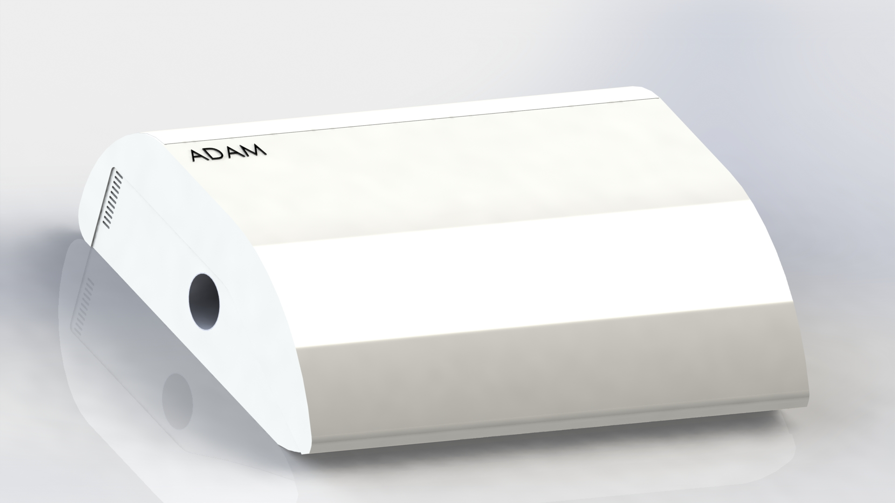
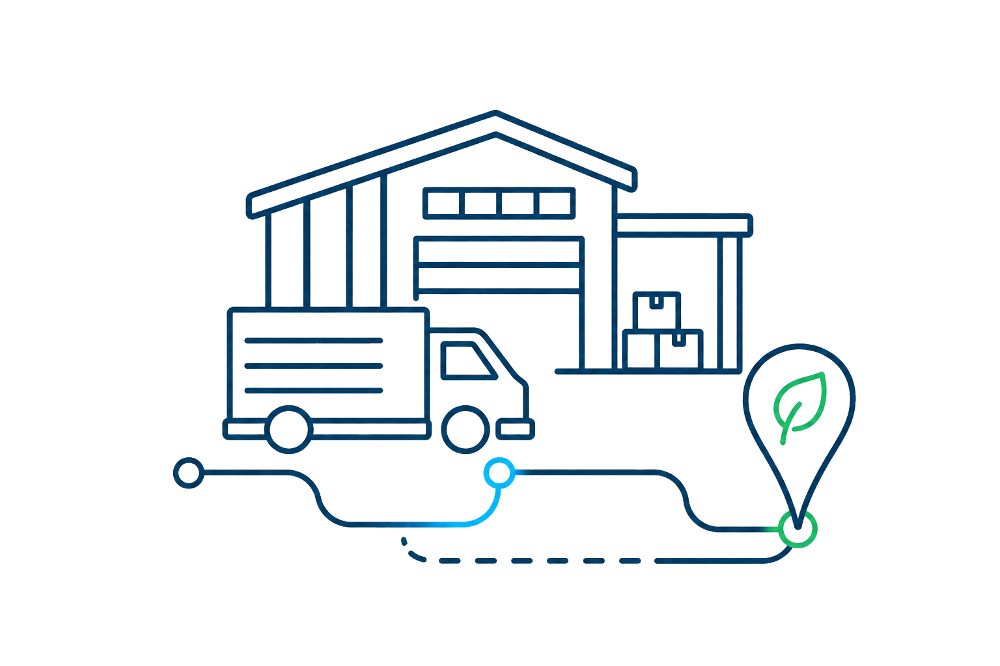

Grant-backed development program · Team and pilot network now forming
Move.Measure.Change.
Cities in motion. Air under control.
We turned the city into a sensor. ADAM is a mobile, AI-driven air monitoring system in development by AerVigil — designed to ride on partner vehicles and read the air street by street.
The problem
You can't fix what you can't measure.
330K+
Premature deaths per year from air pollution in Europe — the single largest environmental health risk on the continent.
95%
Of urban Europeans exposed to unsafe air pollutant levels
50K
EU companies required to report verified air data under CSRD from 2025
5–10%
Of city area covered by stationary stations — at €50,000–€150,000 each, dense networks are financially impossible
Directive 2024
The new EU Air Quality Directive sets stricter limits — cities compliant yesterday are in violation today
The solution
ADAM — AI-DrivenAir Monitoring
ADAM is a mobile AI-driven air quality monitoring system that turns partner vehicle fleets — taxis, delivery and logistics — into a network of street-level sensors, giving cities full real-time coverage at a fraction of the cost of stationary stations.
Rooftop unit
Standard roof-box mounting, powered by the vehicle, ~1 hour install
Modular sensing
Particulate matter, NO₂ and O₃ first — new modules can be added later

How it works
One continuous route: from a partner vehicle to a decision a city can act on.
{{ s.iconEl }}
{{ s.num }}
{{ s.title }}
{{ s.body }}
Why ADAM
Six reasons this changes the map
{{ a.iconEl }}
{{ a.num }}
{{ a.title }}
{{ a.body }}
See it in action
The whole city,one living map.
Vehicles, routes and measurement points resolve into a street-level air quality layer — refreshed as the fleet moves, readable at a glance with the EU air quality index.
Open the visual demoIllustrative demo with simulated data — not a live deployment or certified measurement result.
Build the first network with us
Existing routes can become shared environmental infrastructure.
For cities
✓Understand street-level patterns
✓Improve planning and operations
✓Support policies with better evidence
✓Communicate with confidence

For fleet operators
✓Use routes you already run
✓Low-disruption, easy installation
✓Designed for passenger cars and vans
✓Contribute to a cleaner, healthier city
Our mission
Make street-level air quality as visible — and as actionable — as traffic. Every street, every neighborhood, every hour.
Team
AerVigil is assembling a team across sensing hardware, machine learning and urban data — building ADAM through a funded development program with pilot conversations under way.
Team and pilot network now forming →
Backed by

ADAM received Horizon Europe / European Innovation Council support through a program for Ukrainian technology SMEs and startups.
News
All news →[ upcoming: pilot program announcement ]
[ upcoming: hardware development update ]
Put your city in motion.
Cities, fleets, industry, researchers — if street-level air intelligence matters to you, let's talk.
Start a conversation